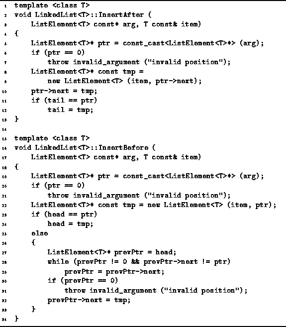
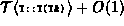
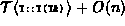

Data Structures and Algorithms
with Object-Oriented Design Patterns in C++
Data Structures and Algorithms
with Object-Oriented Design Patterns in C++
The functions InsertAfter
and InsertBefore both take two arguments.
The first is a pointer to an element of the linked list
and the second is a reference to the item to be inserted into the list.
The item is inserted either in front of
or immediately following the indicated list element.
Program  gives the code for the InsertAfter and
InsertBefore member functions.
gives the code for the InsertAfter and
InsertBefore member functions.

Program: LinkedList<T> Class InsertAfter and InsertBefore Function Definitions
The InsertAfter member function is almost identical to Append. Whereas Append inserts an item after the tail, InsertAfter inserts an item after an arbitrary list element. Nevertheless, the running time of InsertAfter is identical to that of Append, i.e., it is .
To insert a new item before a given list element, it is necessary to traverse the linked list starting from the head to locate the list element that precedes the given list element. In the worst case, the given element is the at the tail of the list and the entire list needs to be traversed. Therefore, the running time of the InsertBefore member function is .
 Copyright © 1997 by Bruno R. Preiss, P.Eng. All rights reserved.
Copyright © 1997 by Bruno R. Preiss, P.Eng. All rights reserved.